Post-Training for Biological Foundation Models
22 curated papers on what happens after pretraining — the recipes that turn a base scFM, PLM, or general LLM into a tool a wet lab can trust. Spans 2023–2026 and covers supervised fine-tuning protocols (scGPT-Protocol, DANCE, TIME-LLM, CodonFM, C2S-Scale), parameter-efficient adapters (scPEFT, PEFT-PLM, ColabSaprot, Geneformer-Scaling QLoRA), RL elicitation of reasoning (ProteinRL, Cell-o1, Gene-R1), multi-agent verification pipelines (GeneAgent, CASSIA, CyteType, SpatialAgent, SPARK), memory, active-learning, and field-review syntheses (Mem0, DeMeo, LLM4Cell, AI Agents in Drug Discovery), and clinical post-training (AMIE).
Last reviewed: September 2026 · Inclusion: maintained, benchmarked, or recipe-defining post-training methods for biological foundation models · Found an issue? Suggest a fix on GitHub
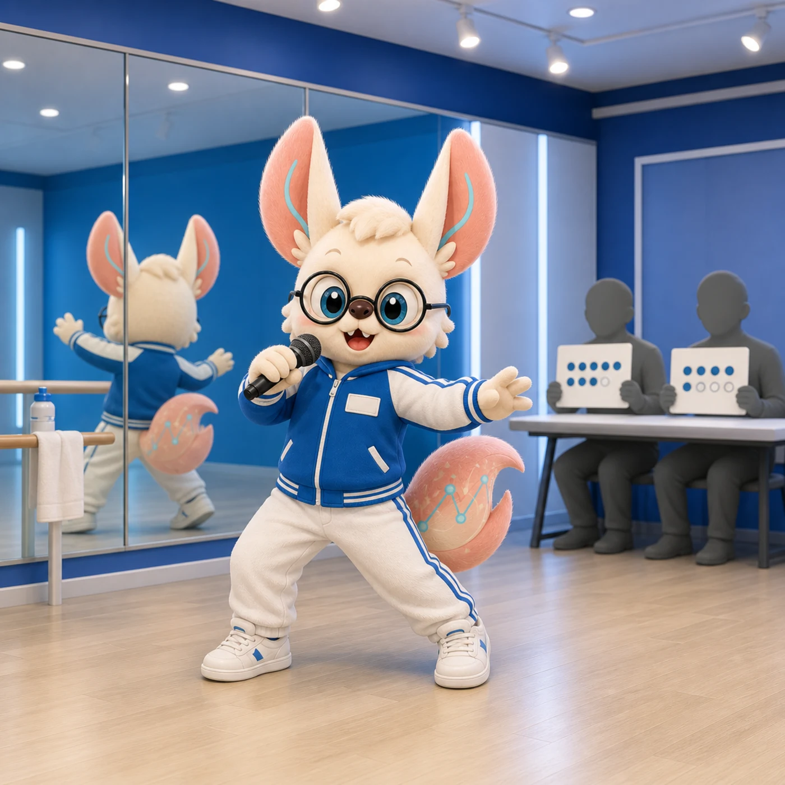
🎤 The Trainee System: Post-Training in Six Lessons
「天赋练习生满街，出道靠点评循环。」
A K-pop trainee has raw talent; the trainee system — practice, evaluation, small corrections, more practice — is what produces a debut. A pretrained model is that trainee; post-training is the system. Six lessons from the practice room, re-read as the post-training stack. (K-pop sparing: no real agencies were harmed.)
The pretrained base & SFT
The audition room is full of kids with perfect pitch and zero stage discipline. The first choreography lesson is pure imitation: watch the curated routine, copy it exactly, a hundred times.
SFT. The pretrained model is raw talent. Supervised fine-tuning is the imitation phase: curated instruction–answer pairs, cross-entropy, until the routine lands — scGPT-Protocol's 99.5% F1 on the retinal atlas is the polished first stage. Family 1 ↓
Verifiable rewards
Every practice run ends with the mentor holding up a score. The rule of the house: the score must be checkable — did the note land, yes or no. Judges who score on "vibe" get gamed by confident trainees.
RL needs a checkable reward. R1-style RL elicitation works when the reward is verifiable — a fold, an exact match, a one-to-one batch constraint. Score on vibes (a neural judge) and the policy reward-hacks. PPO vs DPO vs GRPO ↓
Anti-forgetting
The coach stops a trainee mid-drill: fix the footwork, but do not touch the voice — the tone is why you were signed. Over-correct, and the debut stage loses the one thing that made you special.
Frozen prior, backbone, quantized base. Every successful bio post-training paper has an anti-forgetting mechanism: ProteinRL's fixed Prior PLM, scPEFT's frozen backbone, QLoRA's 4-bit base. Correct the move; keep the voice. The zoo ↓
DPO
No scorecard this week — just two videos side by side: this run is the keeper, that one is not. Watch both, learn the difference directly, no mentor in the loop.
Direct preference optimization. DPO trains offline on chosen/rejected pairs with the reward implicit in the policy log-ratio — no reward model, no rollouts. The cheapest entry into preference alignment. DPO walkthrough ↓
GRPO
New house rule for the month: each trainee performs eight takes, and your score is how far above (or below) the group average you land. No mentor needed — the group is the baseline.
Group-relative policy optimization. GRPO samples a group of completions per prompt and normalizes the advantage within it — no value function, no reward model, just a verifiable score and the group mean. See the panel ↓
Verification before debut
Before the stage lights turn on, a panel of veterans checks every claim against the record books: was that really the highest note, the original move? Confidence scores get calibrated; anything unverified gets sent back.
Multi-agent verification. GeneAgent's database lookups (44% → 19% hallucination), CASSIA's calibrated quality scores, AMIE's 10-domain RCT rubric — the debut panel is what makes the performance trustworthy. Family 4 ↓
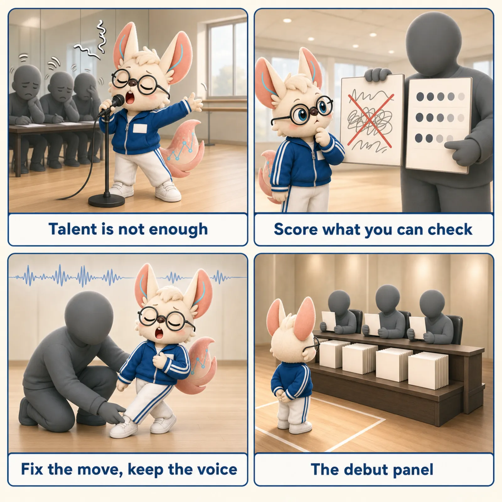
「天赋免费，出道靠点评。」 — talent is free; the feedback loop is the product.
🎯 Core Concepts
Why post-training is now where the action is
Pretraining gives you a substrate; post-training gives you a tool. The 2023–2024 wave of biological foundation models — Geneformer, scGPT, scFoundation, ESM-2, Nucleotide Transformer — established that masked-LM, contrastive, and decoder-only objectives can absorb tens to hundreds of millions of cells or sequences. But every downstream application that matters — annotate a disease atlas, predict a perturbation, design a protein, draft a cardiology consult — requires a second training phase: aligning, specialising, verifying, or compressing the base model so it behaves correctly on the actual task.
This module is the umbrella view: given a base biological FM, which post-training recipe should you reach for, and why? Focused companions on this hub cover the pieces in depth — fine-tuning (LoRA/PEFT/adapters), pretraining (what comes before), generative models (the architectures being post-trained), and transformer architecture (the blocks underneath).
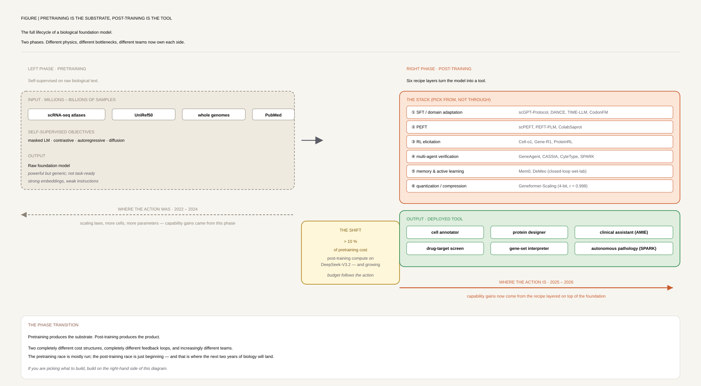
The post-training stack: 7 composable stages
- 1 · Supervised fine-tuning (SFT) / domain adaptation. Update some (or all) base weights on labeled task data. The dominant 2023–2024 pattern: scGPT-Protocol (99.5% F1 retinal annotation), CodonFM continued pretraining, TIME-LLM reprogramming, DANCE dual-modality adaptation.
- 2 · Parameter-efficient fine-tuning (PEFT). Freeze the base, train <1–5% of parameters via LoRA, prefix tokens, or autoencoders. scPEFT: 96–99.95% parameter reduction with gains over full FT; PEFT-Proteomics: within 10–15% of full FT at 240–395× fewer params.
- 3 · RL elicitation of reasoning. R1-style: reward verifiable reasoning chains. Cell-o1 (o1 distillation + GRPO, +73% on CellPuzzles), Gene-R1 (3-stage pipeline, 108–257% ROUGE-L over base), ProteinRL (prior-regularised policy gradient), C2S-Scale (GRPO + BioBERTScore).
- 4 · Multi-agent verification. Wrap the base model in structured workflows with database lookups, self-critique, and confidence scoring — "post-training without gradient updates". GeneAgent (44% → 19% hallucination), CASSIA, CyteType, SpatialAgent, SPARK, AMIE.
- 5 · Memory and active learning. Long-running deployments need a memory layer (Mem0: −91% p95 latency, >90% token-cost reduction) and/or an experimental feedback loop (DeMeo: closed-loop ARL, 17×/13× hit-rate over random).
- 6 · Quantization & compression. Trade precision for speed and memory. Geneformer-Scaling 4-bit NF4 + double quantization preserves contextual embeddings at r=0.998; in-silico KO screen cost drops $25k → <$5k.
- 7 · Inference-time compute scaling. Chain-of-thought sampling, best-of-N, MCTS-guided rollout — adapt the model's reasoning budget, not its weights. AMIE's conversational refinement loop is Stage 7 post-training in deployment: zero gradient updates, all the adaptation happens at inference time via multistep reasoning, retrieval, and self-critique. DeepSeek-R1 proved the pattern generalises far beyond biology. Prerequisite: a verifiable scoring function that can tell a better reasoning chain from a worse one — without it, more inference-time compute just samples more confidently wrong answers.
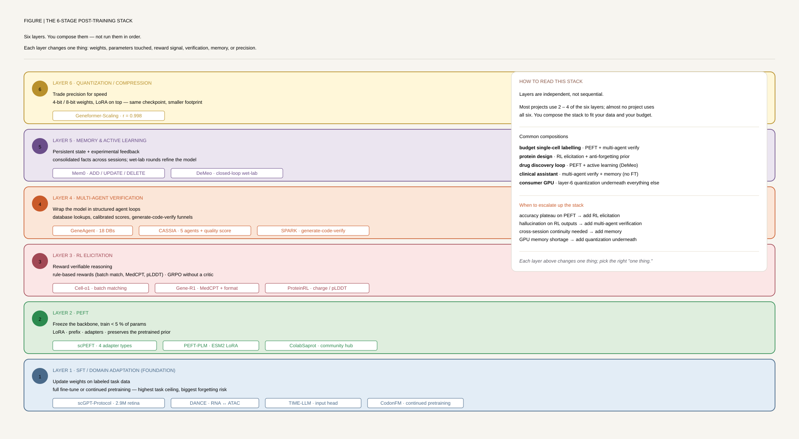
Bio-specific constraints
- Verifiable rewards are rare. Math has ground truth; biology mostly doesn't. Cell type labels disagree across atlases by ~25%, and mechanism hypotheses have none. The successful bio-RL papers all engineer a verifiable proxy — batch-level one-to-one constraints (Cell-o1), semantic + lexical rewards against curated labels (Gene-R1), or computable properties like charge and pLDDT (ProteinRL). If you can't define one, RL elicitation will reward-hack.
- Data is small and uneven. Most biological tasks live in 1K–100K labelled examples — exactly the regime where PEFT beats full fine-tuning, because the full model overwrites itself.
- Evaluation is expensive and benchmarks lag. Wet-lab validation takes weeks to months. Multi-agent verification works around it with database lookups and calibrated LLM judging as a cheap proxy — improving the verification surface often matters more than improving base accuracy.
- Catastrophic forgetting is real. Fine-tune a 33M-cell scFM on your 5K-cell disease atlas and you can erase the pretrained gene–gene relationships that made it useful. Every successful paper has an explicit anti-forgetting mechanism.
- The base model is increasingly fungible. CyteType's finding is that performance is architecture-driven, not LLM-driven — open-weight backbones reach 95% of frontier at a fraction of cost inside a good scaffold. The post-training recipe is now the moat.
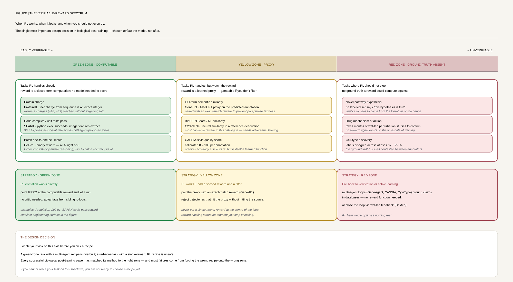
🕰 Evolution Timeline
- 2017 · PPO and the RL substrate. Proximal Policy Optimization defines the policy-gradient template every later RL fine-tune uses; REINVENT ports it to chemistry with prior-regularised loss — the direct ancestor of ProteinRL.
- 2023 · ProteinRL, the first bio RL fine-tune. REINVENT-style policy gradient on ProGen2-764M for property-directed protein design — β-lactamase net charge pushed to +18/−39 while preserving fold and active-site residues. Same year, InstructGPT-style RLHF goes mainstream in NLP.
- 2024 · PEFT mainstreams; SFT protocols mature. LoRA comes to ESM-2 with proteomics-specific hyperparameters (r≥4, W_K+W_V); DANCE tackles dual-label-scarcity multi-omics; CodonFM scales codon-level masked LM; TIME-LLM reprograms a frozen Llama-7B with an input head only.
- 2025 H1 · Multi-agent verification + RL reasoning land in biology. scGPT-Protocol standardises full-FT (99.5% F1); Mem0 defines the production memory layer; SpatialAgent launches the autonomous-agent template; Cell-o1 ports o1 distillation + GRPO to single-cell (+73%); GeneAgent cuts hallucination 44% → 19%.
- 2025 H2 · PEFT for scLLMs, community ecosystems, active learning. Gene-R1's 3-stage RL pipeline; ColabSaprot ships SaprotHub community adapters; DeMeo demonstrates closed-loop ARL (17× hit-rate); CyteType proves architecture over model; CASSIA ships 5-agent calibrated annotation; scPEFT systematises four adapter types.
- 2026 · Clinical RCTs, quantization-native scFMs, agentic discovery. AMIE delivers the first RCT-level evidence that inference-time post-training improves cardiologists (46.7% vs 32.7% preferred); Geneformer-Scaling defines scaling laws to 316M and ships 4-bit QLoRA; SPARK runs autonomous concept discovery across 5,400+ patients for ~€4K.
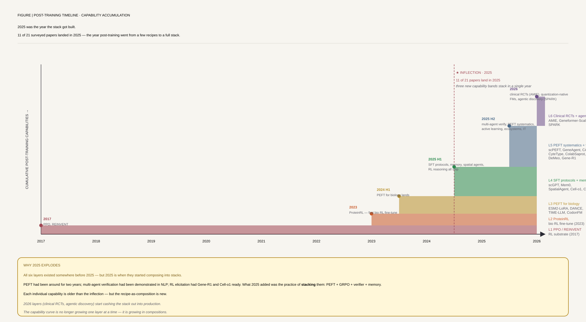
⚖️ Side-by-Side: PPO vs DPO vs GRPO
Three ways to turn human or verifiable feedback into a better policy — PPO (online RL with an explicit reward model), DPO (offline, direct preference optimization, no reward model), and GRPO (group-relative policy optimization on verifiable rewards, no reward model, no value function). The same starting point — a base policy π_θ and preference data or a verifiable reward — becomes three very different training pipelines.
PPO / ProteinRL
Bradley–Terry on (chosen, rejected) pairs; or a fixed prior PLM log-prob (ProteinRL)
sample completions, score with RM, clip-ratio PPO gradient; KL vs reference policy
DPO
r*(y) ≈ β log [π_θ(y)/π_ref(y)]; reward is implicit in the policy log-ratio
max log σ(β·log-ratio chosen − β·log-ratio rejected); no rollouts needed
GRPO
score each with a verifiable reward (batch accuracy, ROUGE-L, BioBERTScore, format check)
Â_i = (r_i − mean(r)) / std(r); the group mean replaces a learned value baseline
The split traces back to one root decision — whether to learn a separate reward signal or eliminate it. PPO pays for training and maintaining an RM but handles any preference signal; DPO eliminates the RM by reparameterising the reward as a log-ratio between current and reference policy — purely offline, but vulnerable to distribution shift; GRPO removes both RM and value function by computing advantage within a sampled group, which only works when the reward is checkable without a neural model — exactly the verifiable-reward design criterion that makes Cell-o1, Gene-R1, and C2S-Scale tick in biology.
Three variants worth knowing before picking one of these three. ORPO (Hong et al. 2024) drops the reference model entirely and optimises an odds-ratio term added directly to the SFT loss — one training stage instead of SFT-then-DPO, and more stable than DPO in small-data regimes exactly like the <100K-label tasks common in biology. SimPO (Meng, Xia & Chen, NeurIPS 2024) is also reference-free, but its fix targets DPO's length bias: it normalises the reward by sequence length so the policy can't win by generating longer (not better) completions — worth checking whenever you eval by win-rate. DAPO (ByteDance Seed, 2025) instead targets GRPO's training instability at scale — Clip-Higher, dynamic sampling, token-level policy-gradient loss, and overlong-reward shaping — and has become the de facto reference recipe for open, reproducible GRPO training since C2S-Scale and Cell-o1-style pipelines were built.
🧩 Method Families
The 22 papers fall into six families by post-training recipe. Some papers fit two — placed in best fit.
1 · Supervised Fine-Tuning & Domain Adaptation
Classical post-training: cross-entropy/NLL on labelled task data, updating some or all base-model weights. The workhorse pattern when you have curated labels and a base model in the right modality.
scGPT: End-to-End Protocol for Fine-Tuned Retinal Cell Type Annotation
A standardised, end-to-end protocol for fine-tuning the 33M-cell scGPT foundation model on a 2.9M-cell Human Retina Cell Atlas covering 111 cell types across 10 major classes. Defines preprocessing → fine-tune → inference → evaluation modules — the canonical SFT recipe for scLLMs in a single paper.
- Type-level F1 99.5% (bipolar cells), class-level F1 99.47%, cross-dataset macro F1 96.10% across 9 independent cohorts
- 3–13 hour fine-tune on A100 80GB vs weeks from scratch; Cohen's κ = 0.994 for BC annotation
- Validated across snRNA-seq, scRNA-seq, multiome, and AMD disease samples — first standard for FM fine-tune in single-cell
DANCE — Semi-supervised Knowledge Transfer Across Multi-omic Single-cell Data
Post-trains a shared MLP encoder across scRNA-seq and scATAC-seq under dual label scarcity in both source and target modalities. Combines Optimal Transport pseudo-labelling, divide-and-conquer target supervision, and cross-omic multi-sample Mixup to align modality-specific representations without paired measurements.
- Outperforms DAN, CDAN, MCC, FixMatch, scJoint, scNCL, scBridge, Harmony, Seurat across 1%/5%/10% label ratios
- Effective reverse transfer scATAC → scRNA; robust to noise, class imbalance, and domain shifts
- 60-epoch training with SGD lr=3e-3 — minimal-compute alternative to large scLLMs
TIME-LLM: Time Series Forecasting by Reprogramming Large Language Models
Keeps a Llama-7B frozen and trains only a small input-reprogramming head + Prompt-as-Prefix template to align time-series patches with text-prototype representations. Zero LM gradient updates — all adaptation happens in the wrapper. The template for "specialise without touching base weights".
- Beats PatchTST, FEDformer, Autoformer, GPT4TS, DLinear, TimesNet on ETT/Weather/Electricity/Traffic/ILI
- Prompt-as-Prefix injects dataset background + task instructions + input statistics — zero-fine-tune adaptation
- Trained on a single A100-80G; reprogramming layer + output projection are the only trainable parameters
Learning the Language of Codon Translation with CodonFM (EnCodon)
A codon-level BERT (80M / 600M / 1B params) pretrained on 130M+ CDS across 22K species, then fine-tuned on gnomAD common-vs-rare missense variants for pathogenicity. Codon-frequency Weighted Masking emphasises rare codons during MLM. The post-training step matches AlphaMissense using sequence alone.
- ClinVar synonymous variants: −log10(p) = 3.2 (1B-CDWT) vs 1.5 (mRNA-FM) — SOTA on the hardest variant class
- DDD missense: −log10(p) = 45 after gnomAD fine-tune, matching/exceeding AlphaMissense
- Zero-shot mRNA design: R²=0.50 translation efficiency, ρ=0.70 protein expression — no task-specific FT
C2S-Scale: Scaling Large Language Models for Next-Generation Single-Cell Analysis
Fine-tunes 410M–27B decoder-only LLMs (Gemma 2, Pythia) on cell-as-sentence representations of 50M+ cells across 800+ datasets — multi-task SFT for prediction, generation, and dataset interpretation. The 27B variant is additionally GRPO-aligned with BioBERTScore rewards — a hybrid SFT + RL elicitation pipeline.
- 95.43% cell-type annotation accuracy (vs scGPT 93.1%, Geneformer 94.0%); +3% BERTScore vs GPT-4o on dataset interpretation
- GRPO with BioBERTScore reward: +16% scFID on IFN-related genes; +9.2% Kendall τ on L1000
- Experimentally validated silmitasertib as IFN-γ-conditional MHC-II inducer (2.1× macrophage induction, p<0.0001)
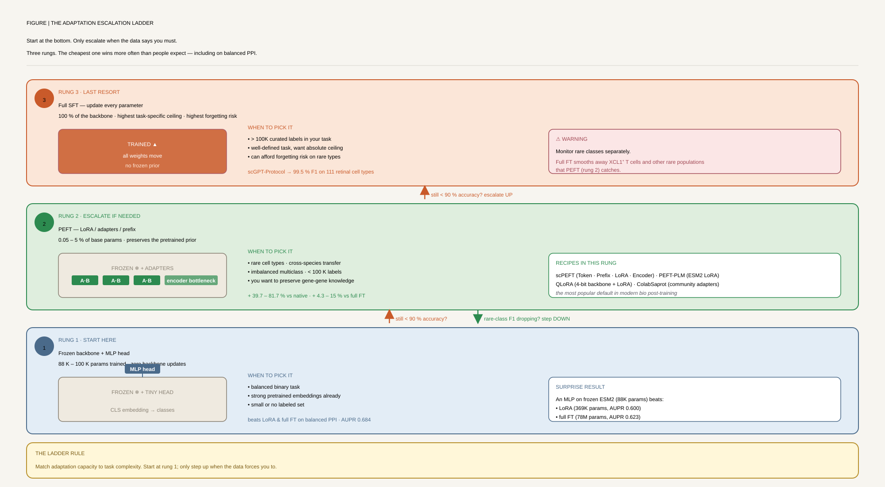
2 · Parameter-Efficient Post-Training (PEFT)
Freeze most of the base model; train low-rank adapters, prefix tokens, or autoencoder bottlenecks. The default recipe when you have <100K labelled examples or a single consumer GPU. Code-level deep-dive in the fine-tuning module.
Democratizing Protein Language Models with Parameter-Efficient Fine-Tuning
Sledzieski et al. adapt LoRA to ESM2-650M for PPI and homooligomer-symmetry prediction, identifying proteomics-specific hyperparameters that diverge from NLP: rank r≥4 (not r=1), target W_K+W_V (not W_Q+W_V), adapt the last 5–12 layers. Within 10–15% of full FT at 240–395× fewer trainable parameters.
- PEFT: 369K–658K trainable params, AUPR 0.600 (PPI) / 0.400 (symmetry) vs FT 78–157M params, AUPR 0.623 / 0.489
- 32GB GPU fits 12-layer PEFT vs 8-layer FT for symmetry — 50% more depth at the same memory
- Surprising: MLP on frozen embeddings (88K params) reaches AUPR 0.684 on balanced binary PPI — beats both PEFT and FT
scPEFT: Harnessing Single-cell LLMs with Parameter-Efficient Fine-Tuning
Systematises four adapter types for single-cell LLMs: Token Adapter (autoencoder in the tokeniser), Prefix Adapter (learnable task tokens), LoRA (low-rank in Q/V attention), and Encoder Adapter (autoencoder after self-attention). Freezes the scBERT / Geneformer / scGPT / scFoundation backbone and trains only 0.05–3.97% of parameters — gains come from not forgetting.
- 39.7–81.7% accuracy improvement vs native scLLMs (P<0.001); 4.3–15% improvement vs full FT (P<0.05)
- 96.03–99.95% trainable-parameter reduction; >50% GPU memory reduction
- Cross-species transfer: +144.5% C. elegans, +39.3% macaque; uncovers COVID-specific CEBPD/SCART1 in effector memory CD8+
ColabSaprot / SaprotHub: Democratizing Protein LM Training, Sharing and Collaboration
Saprot is a structure-aware PLM (BERT-style, 35M/650M/1.3B) trained on 40M AlphaFold2 structures with a 20×20=400 Structure-Aware alphabet combining amino acids and Foldseek 3Di tokens. ColabSaprot wraps it in one-click LoRA fine-tuning notebooks (~1% of params); SaprotHub is the community adapter repository with model-aggregation gains of 5–10%.
- Zero-shot mutation: 0.574 Mega-scale, 0.457 ProteinGym, 0.909 ClinVar (vs ESM-2: 0.478 / 0.414 / 0.862)
- Protein design: 34–39% sequence recovery on CATH; 16× faster than ProteinMPNN
- Wet-lab: xylanase R59S +2.55× activity; TDG 17/20 variants improved editing — community-trained adapter validation
Geneformer-Scaling: Scaling and Quantization of Large-Scale Foundation Models
Scales Geneformer to 316M params on Genecorpus-104M (~150B tokens, 55 tissues), defining transcriptomic masked-learning scaling laws. Then layers 4-bit NF4 + double quantization + LoRA (rank 128 gene-level, 32 cell-level) on the pretrained model — the QLoRA recipe brings full-precision-equivalent contextual embeddings to commodity GPUs.
- 4-bit QLoRA: fine-tune time = 15% (gene-level) / 21% (cell-level); peak memory = 34% / 38% of FP32
- GATA4 in-silico KO embedding shift: Pearson r=0.998 between quantized and full-precision GF-316M
- 30K-cell × 4,096-gene in-silico KO screen: $25k / 32.8 days → <$5k / 5.9 days on A100
- Zero-shot bivalent vs Lys4-only promoter AUC = 0.79; 159 tissue/cell-type classes F1≈0.93, 78 disease classes F1≈0.97
3 · RL Elicitation of Reasoning
Following the R1 / GRPO template, reward verifiable correctness on structured reasoning traces. Works when you can define a checkable reward — a computable property, an exact-match label, a multi-objective score.
ProteinRL: Reinforcement Learning with Generative Protein Language Models for Property-Directed Sequence Design
Ports the REINVENT chemistry RL framework to ProGen2-764M for protein design. Dual-model architecture: a trainable Agent PLM and a fixed Prior PLM, regularised by a property-scaled prior-loss L(θ) = [log P_Agent − log P_Augmented]². Multi-objective optimisation via weighted geometric mean of reward functions — first RL fine-tune of a generative PLM for full sequence design.
- β-lactamase net charge pushed to +18 (positive) / −39 (negative) vs natural −2 — extreme values at distribution tails
- Multi-objective lysozyme: 85% identity + 89 pLDDT + 95% expression probability (vs 23% / 60 / 84% before FT)
- Active-site residues conserved; charged residues localise to surface — implicit structural awareness without an explicit structural reward
Cell-o1: Training LLMs to Solve Single-Cell Reasoning Puzzles with Reinforcement Learning
Reformulates cell annotation from cell-by-cell classification to batch-level reasoning: 8–15 cells must be jointly assigned to N unique candidate types under a one-to-one constraint, mirroring expert workflow. Two-stage post-training on Qwen2.5-7B: reasoning distillation from o1 (3,912 traces, 38.52% acceptance) → SFT cold-start, then GRPO with binary batch-level reward + format penalty.
- Batch-level accuracy 32.9% vs OpenAI o1 19.0% — +73% relative gain on the harder constraint task
- Cell-level accuracy 68.5% improvement over baseline; format validity 98.26%
- Maintains 38.96% avg batch accuracy on 4 unseen diseases — OOD generalisation from a 7B model
- LoRA rank 256 on Qwen2.5-7B, 10 SFT epochs + 20 RL epochs, lr=5e-5 — full recipe public
Gene-R1: Reasoning with Data-Augmented Lightweight LLMs for Gene Set Analysis
Systematises bio-domain R1-style post-training as a three-module pipeline on Llama-1B/3B/8B: Knowledge Warm-up (244,754 instances from GO, UniProtKB, CTD, Reactome, and more) → Reasoning Activation (9,873 sets, GPT-o1-distilled reasoning chains filtered at >0.7 similarity) → Task Alignment via GRPO with dual semantic + exact-match reward.
- ROUGE-L improvement 133.1–257.3% over baseline Llama3 in-distribution; semantic-sim +5.9–18.3% vs Llama3, +2.9–8.4% vs GPT
- Gene-R1 (8B) matches or exceeds GPT-4 and GPT-o1 on semantic similarity — open-source closes the gap to proprietary reasoners
- Hallucination fix: base model called GHRHR an "ERAD regulator"; post-training correctly identifies growth-hormone signalling
- OOD (NeST, MSigDB): no significant difference (p>0.05) vs GPT-4 / Llama3-70B — generalises across gene-set sources
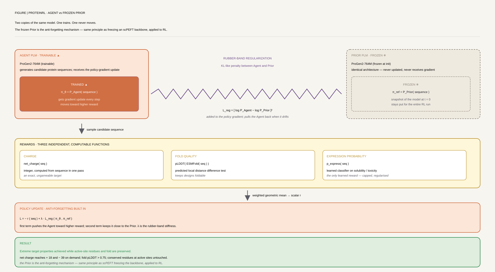
4 · Multi-Agent Verification as Post-Training
The base model is left untouched; the system wraps it with structured workflows, database lookups, self-critique, and confidence scoring. This is "post-training without gradient updates" — the recipe when you can't (or shouldn't) fine-tune the base model.
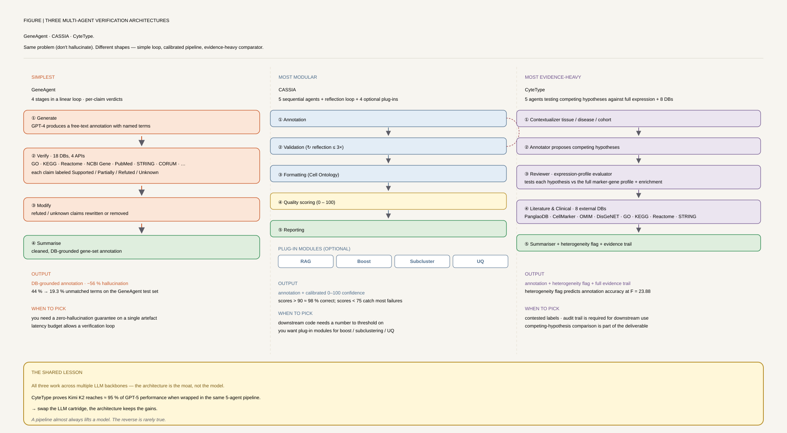
GeneAgent: Self-Verification Language Agent for Gene-Set Analysis Using Domain Databases
Wraps GPT-4 in a 4-stage pipeline — Generation → Self-verification (claims → DB query via 4 APIs to 18 biology databases) → Modification → Summarization. Returns Supported / Partially Supported / Refuted / Unknown labels, then revises. Pure prompt-engineering + tool-use, no gradient updates.
- Hallucination drops from ~44% (GPT-4 baseline) to ~19%; 80.7% exact-match accuracy on enrichment terms (vs 56.0% without gene synopsis)
- 15,903 claims verified — 84% supported, 8% refuted, 7% unknown; 92% accuracy on expert-validated random sample
- 76.9% of process names rank in top 90th percentile vs 12,320 candidates; p = 3.1×10⁻⁵ across 9-fold CV
CASSIA: A Multi-Agent LLM for Automated and Interpretable Cell Annotation
Chains five agents (Annotation, Validation, Formatting, Quality Scoring, Reporting) plus optional RAG, Annotation Boost, Subclustering, and Uncertainty Quantification specialists. Self-reflective validation loop (up to 3 cycles) catches hallucinations; a 0–100 quality score with a <75% threshold flags low-confidence annotations.
- Fully Correct Rate +12–41%, Combined Correct Rate +9–20% over GPTCellType, CellTypist, SingleR on 970 cell types / 5 atlases
- Cancer detection: 72.5% vs 20% for GPTCellType, 88–100% with a cancer-specific prompt
- Quality-score calibration: scores <75% predominantly wrong (20/29); scores >90% strongly correct
- Identifies errors in gold standards: 11/15 (73.3%) high-confidence discrepancies validated as correct re-annotations
CyteType: Multi-Agent AI Enables Evidence-Based Cell Annotation in Single-Cell Transcriptomics
Extends the multi-agent annotation template with Contextualizer / Annotator / Reviewer / Literature-and-Clinical / Summarizer agents. Tools span Cell Ontology, CellGuide, CellMarker, PubMed, GTEx, Enrichr, Disease Ontology, Drug Ontology. Tested across 16 LLM backbones to prove the architecture, not the model, drives performance.
- +388.52% vs GPTCellType (same GPT-5), +267.9% vs CellTypist, +100.67% vs SingleR — 252.36% average gain
- Open-weight Kimi K2 / DeepSeek R1 reach 95% of peak performance at a fraction of cost — architecture supersedes LLM
- 977 clusters across 20 datasets: 41% functional enhancement, 29% subtype refinement, 30% major re-annotation
- Diabetic-kidney "leukocytes" → "activated CD45+DOCK2+ pro-inflammatory T cell" — disease-specific refinement
SpatialAgent: An Autonomous AI Agent for Spatial Biology
A three-module agent (Memory / Planning / Action) wrapping an LLM with 19 specialised tools for spatial transcriptomics: CZI CELLxGENE, PanglaoDB, CellMarker2, LIANA, PROGENy, Scanpy, Harmony, UTAG, factor analysis, pathway enrichment. Plan-template system for gene-panel design, cell annotation, and interaction analysis, with autonomous and human co-pilot modes.
- 2 million cells across human brain, heart, mouse colon under multiple conditions — full agentic workflow
- Outperforms 4 computational baselines and 10 human experts on gene-panel design; human+agent > either alone
- Cell–cell interaction inference, factor analysis, multi-source aggregation in a single chain-of-thought pipeline
SPARK: An Agentic Framework for Autonomous Scientific Discovery in Cancer Pathology
The largest-scale agentic post-training paper to date. A crewAI-style system links Idea Generation (o1) → Idea Refinement (o1) → Code Generation (Claude Sonnet 3.5) → Parameter Verification over a structured whole-slide-image object. Generates, codes, and verifies interpretable morphological concepts on routine H&E across 5 cancer types and 5,400+ patients with no task-specific model training.
- 500 unique ideas in 2h 19min for the prognosis use case; 75.8% pass-rate after filtering; 1,115 verified parameters from 475 ideas
- Predictive AUROCs: BRCA subtype 0.898, BRCA ER 0.863, HNSC HPV/p16 0.828, CRC MSI 0.933
- Identifies a cross-tumor "active tumor front" signature (neutrophils + eosinophils + fibroblasts at the stroma interface)
- Total compute cost ~€4,000 for full discovery + validation — agentic discovery is now financially viable for a single lab
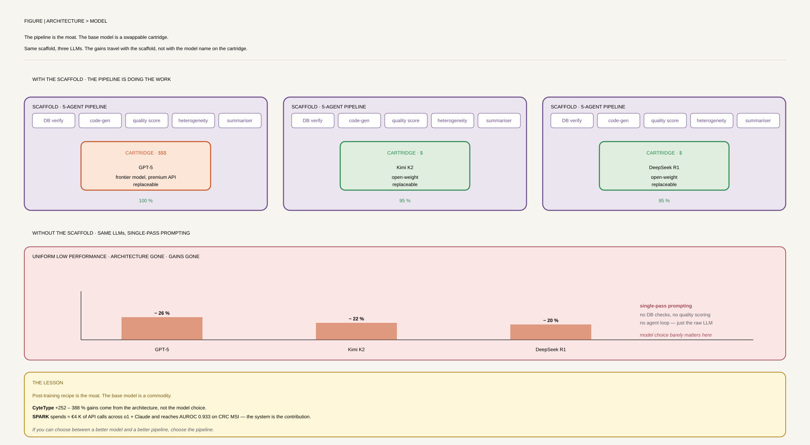
5 · Memory, Active Learning & Online Refinement
Post-training that runs during deployment — memory systems that consolidate facts across sessions, active learning loops that query the model for the next experiment, and review syntheses tying the agentic discovery pattern together. The bridge from offline fine-tune to a continually improving system.
Mem0: Building Production-Ready AI Agents with Scalable Long-Term Memory
The production memory layer underneath long-running biomedical agents. Two-phase pipeline (extraction + update): an LLM extracts salient facts from each new message pair, then tool-calls ADD/UPDATE/DELETE/NOOP against a vector DB of consolidated facts. Mem0ᵍ adds a Neo4j graph layer with typed entities and conflict-detection for temporal reasoning.
- LOCOMO benchmark: Mem0 single-hop J=67.13, multi-hop J=51.15, Mem0ᵍ temporal J=58.13 — SOTA across query types
- 91% p95 latency reduction vs full-context baseline; >90% token cost reduction
- GPT-4o-mini backbone for extraction/update; dual retrieval (dense NL + graph triplets) supports entity and conceptual queries
DeMeo / DrugReflector: Active Learning Framework Leveraging Transcriptomics Identifies Modulators of Disease Phenotypes
Wraps DrugReflector (ensemble of 3 MLPs on CMap L1000, 9,597 compounds × 52 cell lines) in a closed-loop Active Reinforcement Learning system. Each round: predict top compounds → wet-lab assay (flow cytometry) → refine the biological signature toward the experiment-derived embedding → repeat. The original signature is interpolated with the learned signature via a tunable step-size — first demonstration of post-training a drug-discovery FM via experimental feedback at scale.
- 17× hit-rate vs random for megakaryocyte differentiation (19.6% vs 1.1%); 13× for erythroid (16% vs 1.2%)
- Signature refinement adds 2× further hit-rate improvement; median rank improves 3.4× (463 → 138)
- +323% vs Dr.Insight, +73% vs SigCom on cancer lines; +194% / +30% on primary cells (out-of-training generalisation)
- v-score: novel cell-count-invariant signature metric enabling fair comparison across populations of different sizes
AI Agents in Drug Discovery (Review)
First systematic review of operational agentic AI in drug discovery — LLM-based agents coupled with Perception (ChEMBL, PubChem, STRING, Reactome), Computation (AlphaFold, QSAR, PK/PD, docking), Action (robotic pipetting, LIMS, NGS automation), and Memory (vector DB of SAR patterns) tools. Surveys ReAct / Reflection / Supervisor / Swarm architectures and seven case studies.
- Workflow compression: weeks → hours for 100+ molecular structure reviews; 13× IC50 inter-assay-variability detection (Acalabrutinib/BTK case)
- Architecture taxonomy: ReAct (lit triage), Reflection (synthesis route planning), Supervisor (autonomous HTS), Swarm (federated tox)
- Frames every other paper in this module — the canonical "what does post-training look like in industry?" reference
LLM4Cell: A Survey of Large Language and Agentic Models for Single-Cell Biology
The field-level companion to Family 4 of this module: a systematic review of 58 foundation and agentic models for single-cell research, organised into six method families and mapped to eight analytical tasks. Where the AI Agents in Drug Discovery review above surveys the industry deployment pattern, LLM4Cell surveys the model landscape itself — directly relevant to reading GeneAgent, CASSIA, CyteType, SpatialAgent, and Cell-o1 in a shared taxonomy rather than as isolated papers.
- Organises 58 single-cell foundation and agentic models into six families across eight downstream analytical tasks
- Evaluates models across 10 domain dimensions: biological grounding, multi-omics alignment, benchmark suitability, data diversity, fairness, privacy, scalability, and explainability
- Analyzes ethical and scalability constraints often left out of individual model papers — useful context before committing to a post-training recipe at atlas scale
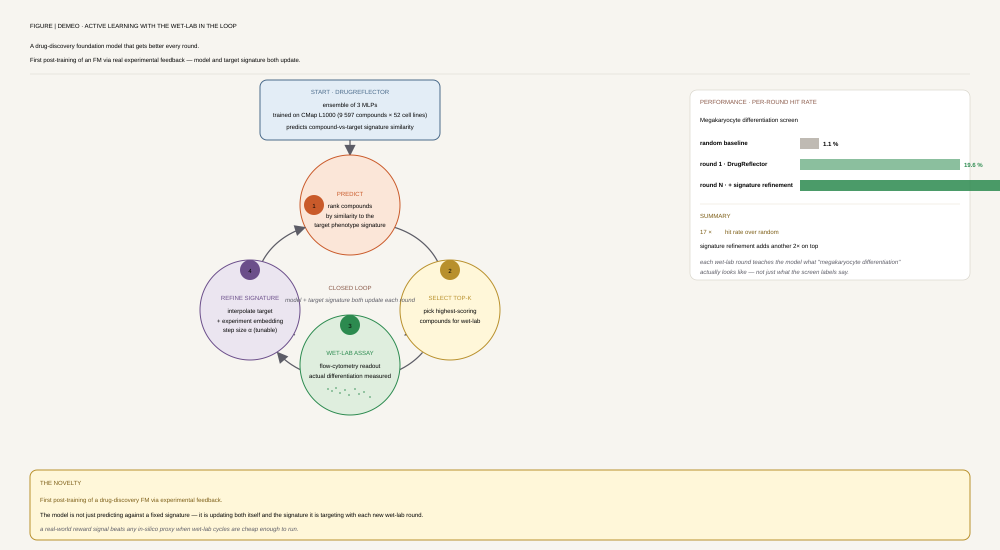
6 · Clinical / Translational Post-Training
The hardest test: does the post-training recipe survive an RCT with real patients? AMIE is the first paper to clear this bar in a cardiology subspecialty.
AMIE: A Large Language Model for Complex Cardiology Care (RCT)
Gemini-2.0-Flash adapted to inherited cardiomyopathy without any fine-tuning. The post-training is entirely inference-time: a multistep inference procedure with web search, self-critique, and a conversational refinement interface that lets clinicians challenge and correct outputs. Evaluated in a real RCT of 107 referred cases with blinded subspecialist preference and a 10-domain assessment rubric (NCT06935253).
- Entire response preferred 46.7% (AMIE-assisted) vs 32.7% (cardiologist alone), P=0.02; management plan preferred 45.8% vs 29.9%, P=0.008
- Clinically significant errors: 13.1% vs 24.3% (−46% relative, P=0.033); missing content: 17.8% vs 37.4% (−52% relative, P=0.0021)
- Hallucinations only in 6.5% of cases; 1.9% clinically significant; cardiologists could prompt self-correction in interactive mode
- 57% of cardiologists rated AI helpful; time saved in 50.5% of cases; 93.5% no clinically significant omission
- First open-source real-world subspecialty cardiology RCT dataset on Redivis (CC 4.0)
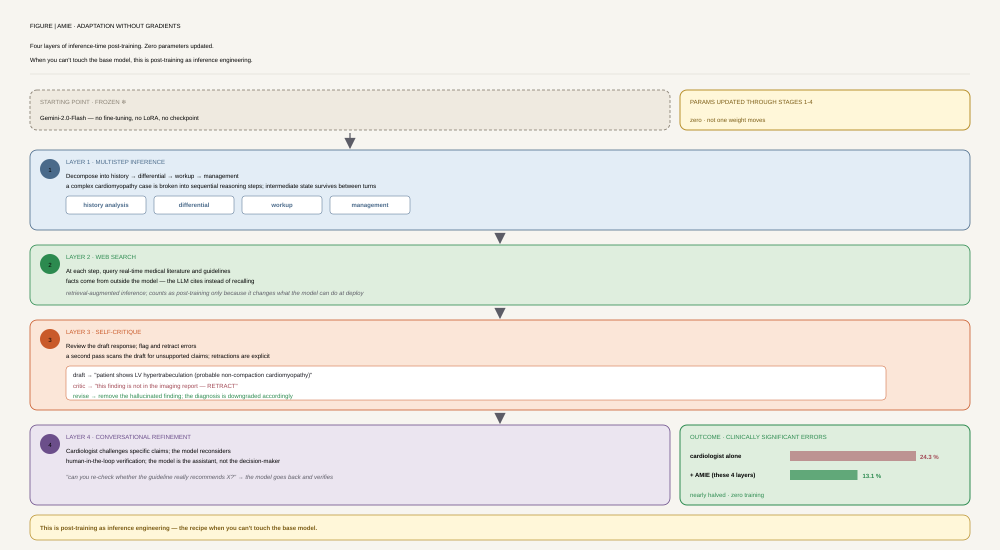
🧭 Selection at a Glance
Which post-training recipe to reach for, given your base model, data scale, compute budget, and downstream goal. Scope: the table covers the 11 core recipes; the family cards above carry the full paper details.
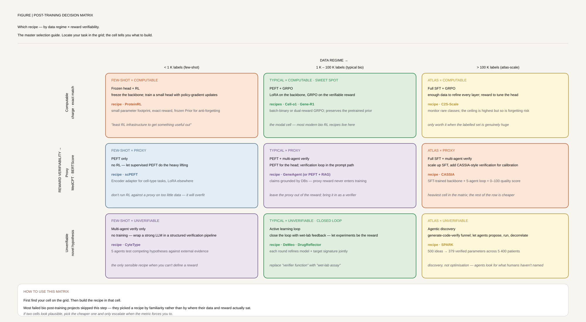
| Recipe | Trainable | Compute | When to use | Anchor paper |
|---|---|---|---|---|
| Full SFT (CE / NLL) | 100% of base | A100 80GB ×1–8 | >100K curated labels, well-defined task, base is in the right modality | scGPT-Protocol (Nat Protoc 2025) |
| Frozen-base + linear/MLP head | ~10⁵ params | Single GPU / CPU | Balanced binary task with strong frozen embeddings; inference-speed-critical screens | PEFT-Proteomics MLP (PNAS 2024) |
| LoRA (rank 4–256) | 0.05–5% of base | 32GB GPU | Multiclass / imbalanced / rare-class task with <100K labels; forgetting-sensitive base | scPEFT (Nat Mach Intell 2025) |
| 4-bit QLoRA (NF4 + DQ) | 0.1–3% adapters | 24GB consumer GPU | Base is 300M+ params; need full-precision-equivalent embeddings on cheap hardware | Geneformer-Scaling (Nat Comput Sci 2026) |
| Reprogramming (input/output head only) | ~1% of base | Single A100 | Cross-modality transfer (time-series → text, image → text); base is a general-purpose LLM | TIME-LLM (ICLR 2024) |
| Instruction tuning + RLHF (no FT) | 0 base params | Inference-only | Closed base model (Gemini, GPT-4); need clinical-grade reliability; have a verified rubric | AMIE (Nat Med 2026) |
| SFT distillation + GRPO | 0.1–5% via LoRA | 1–4× A100 | Strong teacher (o1, GPT-4) + a verifiable reward (one-to-one, exact-match, computable property) | Cell-o1 (arXiv 2025), Gene-R1 (arXiv 2025) |
| Prior-regularised policy gradient | 100% of agent | 2–3× A6000 | Generative task with computable property scores (charge, pLDDT, identity); want to avoid catastrophic forgetting | ProteinRL (NeurIPS 2023) |
| Multi-agent verification loop | 0 base params | API calls only | Hallucination is the bottleneck; authoritative DBs to verify against; cost < wet-lab | GeneAgent (Nat Methods 2025), CASSIA (Nat Commun 2025) |
| Active learning / online refinement | 0–100% of head | Wet-lab + GPU | You can run paired-omics + phenotypic assays; signature drifts across rounds; closed-loop discovery | DeMeo / DrugReflector (Science 2025) |
| Memory layer (Mem0 / Mem0ᵍ) | 0 base params | Vector + graph DB | Production deployment with multi-session users; temporal reasoning at low latency/token cost | Mem0 (arXiv 2025) |
📚 Reading Order for Newcomers
- PEFT-Proteomics (2024, PNAS). The cleanest, most rigorous PEFT paper in biology. Read for LoRA mathematics, domain-specific hyperparameter tuning (r≥4, W_K+W_V), and the unsettling finding that frozen-MLP often beats both PEFT and full FT. Sets the right expectations.
- scPEFT (2025, Nat Mach Intell). The systematic extension to single-cell LLMs. Four adapter types, 96–99.95% parameter reduction, anti-forgetting argument. Read alongside PEFT-Proteomics to see how the recipe transfers across modalities.
- Cell-o1 (2025, arXiv). The clearest worked example of R1-style post-training in biology. Two-stage SFT distillation + GRPO with a verifiable batch-level reward. Read this before the more elaborate Gene-R1 pipeline; it makes the GRPO mechanics concrete.
- GeneAgent (2025, Nat Methods). The simplest, most effective multi-agent verification recipe. 4-stage Generate → Verify → Modify → Summarize loop with database queries. Hallucination 44% → 19% with zero gradient updates. The intro to "post-training without training."
- Geneformer-Scaling (2026, Nat Comput Sci). The synthesis paper. Defines transcriptomic scaling laws, then layers 4-bit QLoRA on the 316M model. Read for the quantization-preserves-contextual-embeddings argument (r=0.998 on GATA4 KO) — this is what makes scFM post-training economically viable.
- AMIE (2026, Nat Med). The clinical reality check. No fine-tuning, no PEFT — pure inference-time post-training via multistep inference + self-critique + web search + conversational refinement. First RCT-level evidence in a cardiology subspecialty. Read to recalibrate what "good enough" means in deployment.
- DeMeo / DrugReflector (2025, Science). The only paper in this module with a real wet-lab feedback loop: 17× hit-rate vs random for megakaryocyte differentiation, with the biological signature refined round-over-round by experimental data. Read last, to understand the gap between offline post-training — every other recipe above, however sophisticated — and a system that keeps improving from real experimental results after deployment.
🧰 Practical Implementation Guide
If your goal is annotating a single-cell atlas with a known label set
Start with frozen Geneformer / scGPT + MLP head on cell embeddings. If accuracy is >90% and balanced, stop here — adding LoRA or full FT often hurts (PEFT-Proteomics, scPEFT). If it's a rare-class or disease-specific task, escalate to scPEFT with LoRA + Encoder adapters (rank 4–8, last 5–12 layers). For multi-batch / cross-platform deployment, follow the scGPT-Protocol full-FT recipe. For multi-agent quality scoring and disease-state refinement, wrap the result in CASSIA or CyteType.
If your goal is designing a protein with specific properties
Two paths. (a) If properties are computable (charge, pLDDT, expression probability), use ProteinRL: dual-model architecture (Agent + fixed Prior PLM), property-scaled prior-regularised loss, weighted geometric mean reward for multi-objective. Budget: 2–3× A6000, 3–6 hours per run. (b) If you need a community-shared starting point on structure-aware embeddings, fine-tune ColabSaprot via SaprotHub — one-click notebook, ~1% trainable parameters, ensemble multiple shared adapters for 5–10% gains. Always validate with ESMFold pLDDT and sequence identity to the natural distribution.
If your goal is R1-style reasoning on a biological task
Follow the Gene-R1 three-module recipe: (1) Knowledge Warm-up — continued pretraining on 200K+ domain instances so the model stops treating gene symbols as meaningless strings; (2) Reasoning Activation — distil 5–10K traces from a frontier reasoner and filter at >0.7 similarity before SFT; (3) Task Alignment — GRPO with a dual reward (semantic similarity + exact-match/format compliance). Verifiable reward is non-negotiable: Cell-o1's one-to-one batch constraint is what makes the recipe work. Without it, the model reward-hacks.
If your goal is a deployable clinical or biomedical assistant
The AMIE recipe is the strongest existing evidence: a strong base LLM (Gemini-2.0-Flash, GPT-4o, Claude Sonnet 3.5) + multistep inference + web search + self-critique + an interactive conversational refinement layer. No fine-tuning — adaptation entirely via prompt and inference engineering. Pair with a Mem0 memory layer for session persistence (91% lower p95 latency). For high-stakes domains, add a GeneAgent-style database verification loop with a clear "supported / partially supported / refuted / unknown" decision schema. Always pre-register your evaluation rubric (AMIE used 10 domains).
If your label budget is under 1,000 examples
This is the regime most wet-lab groups actually operate in, and it changes the recipe. Start with frozen embeddings + a linear/MLP head — PEFT-Proteomics showed this beats both PEFT and full FT on balanced binary tasks with an 88K-parameter head. If accuracy is still insufficient, apply scPEFT's cross-species adapter transfer (+39.3% macaque, +144.5% C. elegans) rather than collecting more in-species labels. For protein tasks, aggregate community adapters from SaprotHub instead of training your own — ensemble gains of 5–10% come for free. Do not run full fine-tuning in this regime: at N < 1,000 examples, full FT overwrites the pretrained priors that made the base model useful in the first place — catastrophic forgetting erases exactly the signal you were relying on the foundation model to provide.
Common Pitfalls
- PEFT is not always faster — context length dominates. For pairwise tasks (PPI, multi-cell context), storing two activation graphs eats most of the memory savings. PEFT-Proteomics could only add 1 extra adapted layer for PPI vs 4 for single-protein symmetry. Profile before assuming PEFT > full FT.
- RL elicitation needs verifiable rewards. ProteinRL works because charge and pLDDT are computable. Cell-o1 works because batch-level one-to-one assignment has a binary truth. The minute your reward is a neural model, the policy will reward-hack — see C2S-Scale's careful BioBERTScore + structured-format dual reward.
- Multi-agent loops add latency × N. GeneAgent's 4-stage verify loop is 4× the GPT-4 calls of a single-pass baseline. Production systems must respect agent depth budgets. AMIE's clinician self-correction loop adds an interactive step that's only acceptable because it saves clinician time in 50.5% of cases.
- Reward hacking with neural reward models. Any post-training step where the reward is itself a model (BERTScore, MedCPT similarity, an LLM judge) is vulnerable to the policy exploiting reward-model artefacts. Mitigate with format-compliance rewards (Gene-R1 dual reward), filtered teacher traces (Cell-o1 38.52% acceptance), and human spot-checks.
- Forgetting during fine-tune. Full FT a 5K-cell disease atlas on a 33M-cell scGPT and you'll erase the pretrained gene–gene relationships that made it useful. Use LoRA + Encoder adapters, or ProteinRL's fixed prior model, or QLoRA's frozen base — always have an explicit anti-forgetting mechanism.
- Pretrain + fine-tune on the same dataset = no gain. If your pretraining and downstream datasets overlap, the post-training "benefit" collapses. Always verify that your fine-tune data was held out of pretraining.
- 4-bit quantization can break in-silico perturbation. Geneformer-Scaling's r=0.998 on GATA4 KO is the well-engineered case (NF4 + double-quantization + calibration). Generic INT4/INT8 without those breaks contextual embedding geometry even when classification accuracy is preserved. Verify embedding fidelity, not just task accuracy.
- Multi-agent verification's quality score must be calibrated. CASSIA's 75% threshold and CyteType's confidence intervals only work because they were calibrated against held-out labels. Shipping uncalibrated LLM-as-judge confidence scores is worse than no confidence score.
- Alignment tax in biology. RLHF/DPO-style preference optimisation can improve instruction-following and general agreeableness while quietly degrading factual recall of rare disease presentations or low-frequency gene–disease associations — the model becomes easier to work with but less accurate on exactly the long-tail cases where correctness matters most. Always re-evaluate on the original factual benchmark after preference optimisation, not only on win-rate against the reference policy.
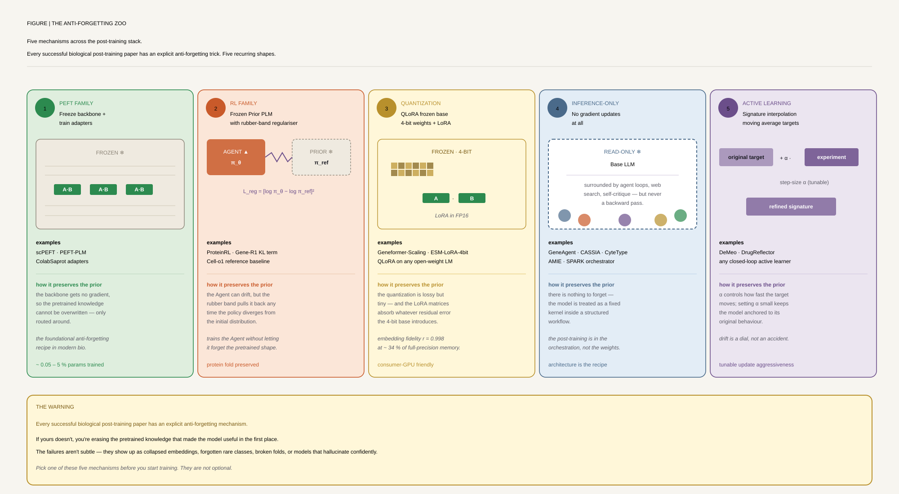
🛠 Hands-On Practice
This walkthrough takes you from a raw base model to a preference-aligned checkpoint using the trl library. The DPO path is the most accessible entry point into post-training: it skips an explicit reward model and optimises directly on chosen/rejected pairs — a practical first step before exploring online methods like PPO or GRPO.
Environment & packages
All packages below are available on PyPI. vllm is optional but strongly recommended for GRPO and PPO, where fast rollout generation is the main bottleneck.
# create a clean env first (Python 3.10+)
pip install torch torchvision --index-url https://download.pytorch.org/whl/cu121
pip install transformers==4.45.0 datasets peft accelerate
pip install trl==0.11.4 # SFTTrainer, DPOTrainer, GRPOTrainer, PPOTrainer
pip install deepspeed # multi-GPU ZeRO-2/3 for larger runs
pip install vllm # fast rollout engine for online RL (PPO/GRPO)Hardware. DPO on a 7B model with LoRA (rank 64) fits comfortably on a single 40 GB A100 or two 24 GB consumer GPUs with accelerate; full-parameter DPO needs 2–4× A100 80 GB. GRPO with vllm rollouts requires a separate GPU for the rollout engine (8+ GB) alongside the training GPU.
Data structures & formats
- Preference dataset — three columns:
prompt(string),chosen(string or messages list),rejected(string or messages list). Standard hub example:trl-lib/ultrafeedback_binarized. - SFT dataset — a
messagescolumn containing a list of{"role": ..., "content": ...}dicts; the tokenizer's chat template converts this to input IDs + labels. Alternatively a flattextcolumn with the template already applied. - LoRA adapter — a tiny
adapter_config.json+adapter_model.safetensorswritten bypeft; merged into base weights at inference withmodel.merge_and_unload(). - Reward / verifiable signal (GRPO) — a Python function
reward_fn(completions, **kwargs) -> list[float]called on each group of rollouts; return scalars — no gradient required. - GRPO group rollouts — for each prompt,
num_generationscompletions are sampled (default 8); the per-group mean reward is subtracted as a baseline before computing the policy-gradient loss.
Minimal code walkthrough
A complete DPO run: load a base model + LoRA, attach a preference dataset, configure DPOConfig, train for one epoch, and save the adapter.
from datasets import load_dataset
from peft import LoraConfig, TaskType
from transformers import AutoModelForCausalLM, AutoTokenizer
from trl import DPOConfig, DPOTrainer
# 1. Load base model + tokenizer
model_id = "Qwen/Qwen2.5-7B-Instruct"
tokenizer = AutoTokenizer.from_pretrained(model_id)
model = AutoModelForCausalLM.from_pretrained(
model_id, torch_dtype="auto", device_map="auto"
)
# 2. LoRA config — keeps base frozen; ~0.5% trainable params
peft_cfg = LoraConfig(
task_type=TaskType.CAUSAL_LM,
r=64, lora_alpha=128, lora_dropout=0.05,
target_modules=["q_proj", "v_proj", "k_proj", "o_proj"],
)
# 3. Preference dataset (prompt / chosen / rejected columns)
dataset = load_dataset("trl-lib/ultrafeedback_binarized", split="train")
# 4. DPO hyperparameters
# beta controls KL penalty: higher beta = stay closer to reference policy
training_args = DPOConfig(
output_dir="./dpo-out",
num_train_epochs=1,
per_device_train_batch_size=2,
gradient_accumulation_steps=8,
learning_rate=5e-5,
beta=0.1, # KL regularisation coefficient
max_length=1024,
max_prompt_length=512,
bf16=True,
logging_steps=10,
save_strategy="epoch",
)
# 5. DPOTrainer handles reference model internally (frozen copy of model)
trainer = DPOTrainer(
model=model,
args=training_args,
train_dataset=dataset,
processing_class=tokenizer,
peft_config=peft_cfg,
)
trainer.train()
trainer.save_model("./dpo-adapter")Common pitfalls & tips
- Always SFT before preference optimisation. DPO and GRPO assume the policy already generates coherent completions. Starting from a raw pretrained base (not instruction-tuned) causes extremely noisy gradients because the chosen/rejected distinction is meaningless relative to random outputs. Run at least a light SFT pass with
SFTTrainerfirst. - Chat-template / tokenization mismatch is the silent killer. The prompt in your preference dataset must be tokenized with the same chat template the model was trained with — including special tokens, role labels, and any BOS/EOS placement. A mismatched template shifts where labels start and produces near-zero DPO loss that looks like convergence but is not.
- Tune
betacarefully in DPO.betais the coefficient on the KL divergence term that keeps the trained policy close to the reference. Too low → reward hacking; too high → the model never moves from the reference. Start at 0.1 and sweep 0.05–0.5. - Length bias inflates win-rate. DPO and GRPO reward models (including LLM judges) systematically prefer longer completions. Track response length alongside reward; add a length-penalty term to the reward function, or filter your preference dataset to be length-balanced before training.
- KL explosion in online RL (PPO/GRPO) kills training. Monitor
kl_coefand the actual KL divergence at every logging step. If KL spikes sharply after a few hundred steps, reduce the rollout learning rate or increasekl_coef. vllm rollout speeds up generation 5–10× but requires keeping the rollout engine in sync with updated policy weights. - Eval beyond loss: use win-rate and downstream benchmarks. DPO loss decreasing monotonically does not mean the model is improving. Run periodic win-rate evaluations (compare sampled completions against the reference model with an LLM judge or a rule-based verifier), and track a fixed held-out benchmark to catch regressions on general capability.